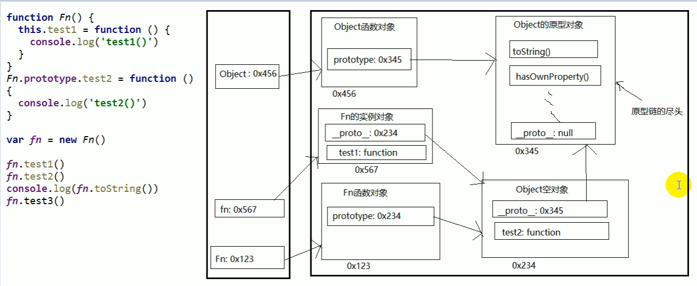

<!DOCTYPE html>
<html lang="en">
<head>
    <meta charset="UTF-8">
    <meta name="viewport" content="width=device-width, initial-scale=1.0">
    <title>Document</title>
</head>
<body>
    <script>

        // Ⅰ-原型 [prototype]
        //     函数!的prototype属性
        //     每个函数都有一个prototype属性, 它默认指向一个Object空对象(即称为: 原型对象)===Object构造函数的实例对象（Object原型对象）
        //     原型对象中有一个属性constructor, 它指向函数对象

        // 给原型对象添加属性(一般都是方法)
        // 作用: 函数的所有实例对象自动拥有原型中的属性(方法)


                    // 每个函数都有一个prototype属性, 它默认指向一个Object空对象(即称为: 原型对象)
                    console.log(Date.prototype, typeof Date.prototype)
                    function Fun () { }
                    console.log(Fun.prototype)  // 默认指向一个Object空对象(没有我们的属性)
                        
                    // 原型对象中有一个属性constructor, 它指向函数对象
                    console.log(Date.prototype.constructor===Date)   
                        console.log(Fun.prototype.constructor===Fun)
                        
                    //给原型对象添加属性(一般是方法) ===>实例对象可以访问
                    Fun.prototype.test = function () { console.log('test()') }
                    var fun = new Fun()
                    fun.test()     


        //   Ⅲ-原型链：图解 
        // ① 原型链
                // 访问一个对象的属性时，
                // 先在自身属性中查找，找到返回
                // 如果没有, 再沿着[__ proto __]这条链向上查找, 找到返回
                // 如果最终没找到, 返回undefined
                //别名: 隐式原型链
                //作用: 查找对象的属性(方法)


        //属性问题
            // 读取对象的属性值时: 会自动到原型链中查找

            // 设置对象的属性值时: 不会查找原型链, 如果当前对象中没有此属性, 直接添加此属性并设置其值

            // 方法一般定义在原型中, 属性一般通过构造函数定义在对象本身上


                    function Fn() { }
                    Fn.prototype.a = 'xxx'
                    var fn1 = new Fn()
                    console.log(fn1.a, fn1) //xxx Fn{}

                    var fn2 = new Fn()
                    fn2.a = 'yyy'
                    console.log(fn1.a, fn2.a, fn2) //xxx yyy  Fn{a: "yyy"}

                    function Person(name, age) {
                        this.name = name
                        this.age = age
                    }
                    Person.prototype.setName = function (name) {
                        this.name = name
                    }
                    var p1 = new Person('Tom', 12)
                    p1.setName('Bob')
                    console.log(p1)  //Person {name: "Bob", age: 12}

                    var p2 = new Person('Jack', 12)
                    p2.setName('Cat')
                    console.log(p2) //Person {name: "Cat", age: 12}
                    console.log(p1.__proto__===p2.__proto__) // true   -->所以方法一般定义在原型中


    </script>
</body>
</html>